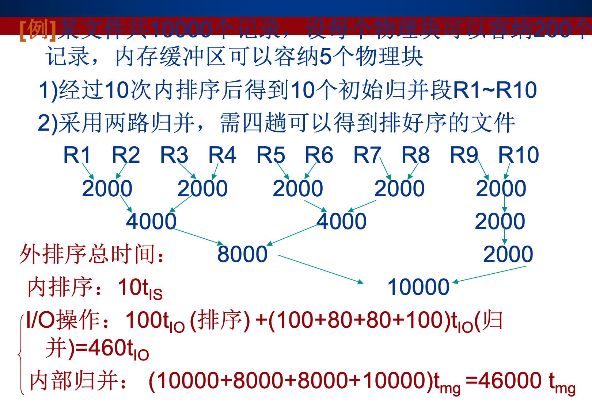

数据结构
排序重点考察->概念重要、选填很多来自课后习题、时间复杂度要求
绪论
- 基本概念
- 时间复杂度->最差复杂度、平均复杂度
线性表
- 单链表
- 链表交换
- 合并
栈和队列
栈特点
顺序栈、链栈
队列——rear front 定义 实现
f指向当前队列头元素的前一位置 r为队尾元素的位置
非循环队列：r-f就是队列长度
循环队列：r-f可能为负，因此要加上队列大小再对队列大小求余 就是队列中对应的元素个数
- 即(n+r-f)%n
递归算法选择题：特殊值（0/1）判断调用次数
循环队列[0,m]入队，改队尾指针：rear=(rear+1)%(m+1)
模数都是按着容量来
容量m+1，为了正确获得m以及0，应该模m+1。
rear当然=rear+1了，指针向后一个
队满条件：(rear+1)%n=front
队空条件：rear==front
串、数组、广义表
KMP算法、next数组、nextval数组求法
KMP的匹配过程（失配、得配）
- 出现失配的地方原地相对位置不动，模式串向右边走到第一个字母到失配的地方，开始自第二个字母配对
矩阵的压缩储存->选择题，位置计算
广义表的定义与实现
深度：括号层数（最深）
长度：元素个数
表头：第一个元素
表尾：除掉表头剩下的
树、二叉树
树转的二叉树是唯一的
二叉树性质：n0=n2+1（度为0的节点=度为2的节点+1）、n=n0+n1+n2
树的二叉链表表示法：
左指针firstchild右指针nextsiblings
左边指向自己的第一个孩子
右边指向自己的下一个兄弟（同层）
- 因此根节点的nextsiblings为空
树定义、基本结构、深度等
树转二叉树：兄弟之间横连起来，后面的当前面的右子。根的第一个孩子是左子。唯一只有一个孩子也放左子
二叉树转森林：根连着自己的左子树成一颗 而每一个右子树自成一颗（割断）拆下来的树的右子想成siblings，对应建成一颗树

建线索树时，要看它的指针有没有被左右子树用。如果用了，就不要在上面画线索了
由某两个序求另一个序
森林与二叉树的转换
哈夫曼树的构造
选取两个权最小的组合成一个树，把权之和放回原序列，重复过程、
选不选已经建成树的根都一样，最后算出来的WPL是一样的。只是看起来可能有些地方深度深一些。
哈夫曼编码
- 前缀编码：某个码字自己不能出现在别人的前缀里（不然别人的码译码到一半先把那个码给译出来了
哈夫曼树 叶子n个 总节点2n-1个（只有度为0的节点和度为2的节点）
哈夫曼树不是完全二叉树（上层并不是很满）
期中
图
邻接矩阵、邻接表、十字链表、临接多重表
dfs
- 往深了走，走不通回退
bfs
- 辐射式扩张，一阶一阶扩张
最小生成树
prim适合稠密
kruskal适合稀疏
dfs生成树的高度<=bfs的（dfs倾向于走的深）
最短路（要求写矩阵的更新过程）
dij
选取全局路径最短的加入点集中
在下一列里更新新点对还没有在点集中的点造成的路径的影响
回到第一步
- 在该点加入点集之前，都要一直写出它的状态。加入点集后，已经是最短路，就不用再更新了
floyd
D(i)表示将第i个顶点加入路径中转点
不能到达的点记为∞
时刻记住连通性以及相应的路径长度对于D(i)言是：在加入了第i个中转点后我经由这个中转点到达的最短距离。原来的连通性不变。但不能凭空构造连通性。一切基于当前加入的这个第i点，用来更新各点间的最短距离
拓扑排序（判环、AOC、AOE网络）
在有向图中选取一个无前驱节点，输出
在图中删掉该顶点以及其所有相关边
重复以上过程
判环：若所有节点都在拓扑排序出来的序列中，则不存在环
判环：dfs重复访问不行（见反例）
关键路径算法、最早最迟算法
先求顶点的，再求边活动的
对图中所有顶点拓扑排序，求出每个事件的最早发生时间ve(i)->由源点到vi的最长路径长度（保证前序事件都完成）递推式：ve（i）=Max{ve(k)+wk,i}，ve(0）=0（源点开始的最长路）
按逆拓扑序列求出每个事件最迟发生时间vl(i）->保证不拖延后续工作，最晚最晚也要从后续工作最晚开始的时候再减掉自己工作的时间，也就是自己的最迟开始做的时间 递推式子（逆拓扑，从sink开始往回算）：vl(i)=Min{vl(k)-wi,k}, 逆拓扑的第一个也就是原拓扑的最后一个，vl(last)=ve(last）（也就是上一步最后一个算完的ve，就是这个vl的初始值）（汇点开始的最长路，值为ve(last）-最长路的路径）
求出每个活动ai最早开始时间e(i)->活动ai=<vj,vk>最早可以在vj完成后开始，即e(i)=ve(j)
求出每个活动ai最晚开始时间l(i)->活动ai=<vj,vk>最晚必须要在vk开始前减掉工期开始，即l(i)=vl(k)-wj,k
找出e(i)=l(i)的活动ai，即为关键活动。由关键活动形成的由源点到汇点的每一条路径就是关键路径，可能不止一条（l(i)-e(i)代表这个活动完成的时间松弛度。若为0，则说明这个活动必须如期完成，不然就将拖延所有的工程）
查找
ASL
- 定义：对Pi*Ci的求和，Pi表示查找某一个记录的概率（一般等概率为1/n），Ci为查找这一记录所需要的表中字与所要查找的关键字的比较次数
顺序、折半、分块
顺序查找
逐个扫描 ASL=1+n/2
监视哨：判定结束条件，将是否找到设置为循环中的判定，省去了查找的二次判定。
评价：
适用顺序、链式，不管有序与否。
效率较低
折半查找
折半查找使用mid=(low+high)/2的向下取整计算中点坐标
更改范围时，由mid-1更新为新的high，mid+1更新为新的low
查找失败：当low>high时才失败。low=high时为最后一次判断
折半查找的判定树：
使用二叉树描述，节点记录当前查找的中点坐标
根节点代表比较一次。树深度（由根节点=1）始算，代表相应的查找所需要的比较次数——>用于计算最小比较次数
查找失败：引入外部节点，最少要有logn向下取整，最大则+1（最底下两层才可能失败）->存疑。会出现查找失败的点：子树不满的点。这类点的深度为logn或logn+1（向下取整），因此查找失败最少logn 最多logn+1
查找成功最多比较次数：最深层，logn向下取整+1（深度）
ASL：树形结构，ASL=log(n+1)-1
具体到某一个判定树的ASL计算：ASL=1/n*(求和（每层高度（比较次数）*当前层节点数））
实际上除了最后一行不满上面都是满的，因此就递增乘下去
分块查找
按索引查找，保存一个索引表，记录起始地址、起始地址到下一个起始地址里最大的关键字。
思想类似与先确定在哪个块，再在块内顺序查找（折半确认块+顺序的合成）
二叉排序树——递归构建，左子树小于右子树
- 具体到某一个二叉排序树的ASL计算：ASL=1/n*(求和（每层高度（比较次数）*当前层节点数））与二叉判定树形式相同
平衡二叉树
调整（LL、LR、RL、RR型判断）
平衡因子为左子深度-右子深度
相应的调整法->在中序的条件下保持平衡，因此不能改变中序序列
B-树——>插入、删除，中序，等于的m叉排序树
树中每个节点至多有m颗子树
m阶树：除根之外的所有节点内部东西要求最少「m/2
所有非终端节点最多有m-1个关键字
3阶B树：节点内1-2个内容 4阶B树：节点内1-3个内容
插入：m叉搜索树进入最底层进行插入，判断是否撑满，若撑满，则分裂。分裂原则：「m/2（向上取整） 处的东西拿上去（向上插入），再看看会不会满，若满则继续分裂，再把这个满的中位元素向上插入
删除：按照中序遍历的理念，删除一个点等于把其后继直接换到这个位置，之后再把这个后继删掉。删掉过程：保证这棵树的平衡。尝试各种并点、拉点、移点到相应位置。
散列表、哈希的构造、查找、处理冲突的方法，以及ASL的计算
散列表处理冲突
链地址法：同一位置时，用链支出去
线性二次探测法：offset：1，\-1，4，\-4，9，\-9...不会出现二次聚集（堆积），但不一定能找到不冲突的地址 线性探测法：offset：1，2，3，4，5，6...会出现二次聚集（堆积）（用了别人的空间导致别人本来的地方用不了要继续找。ASL的计算：
线性
成功：总共记录的个数
失败：散列函数取值的个数，并且要在散列函数所有取值对应的格子一个一个算。空的话一次比较就失败了，非空的话还得一路比到空为止。判空/等也是一次比较
链：
成功：n层的个数*n的求和
失败：还是从一一对应开始算，有值的地方要多判一次
内排序
内部排序：
时间复杂度
插入排序：
直接插入
n2
扑克牌理牌
将排序好的序列放在数列前部，对在序列后紧接者往前寻找插入位置（涉及到大量后移位过程）
稳定，链表则移动指针
适用初始记录基本有序、n小
折半插入
n2
在前面查找位置的过程中使用折半法
稳定
使用折半则无法使用链结构
适合初始记录无序、n大
希尔排序
n1.3
将间隔为increment的数组合成为一组，每次在组内相对排出有序
跳跃式移动导致不稳定
增量值表内的值应互质 且最后一个一定是1
适合初始记录无序、n大
交换排序：
冒泡：
n2
一把二叉叉子，每次选两个（位置+1而不是+2），若逆序则调换一下，为一趟（像起泡）一趟完毕后最后一个位置为比较出来的当前趟元素中的最大值
下一趟把这个最大值踢掉，再执行起泡，选择出次大值，….
稳定（相同序不交换）
链式可用
平均性能比直接插排差
快排：
最好nlogn最差n2（已经有序的情况）
思想：取pivotkey （一般为第一个。特殊情况，比如按某值划分两类，则选那个值），两个指针。
右往左扫，扫到一个比枢轴小的，与枢轴交换位置
左往右扫，扫到一个比枢轴大的，与之前的空位交换位置…
完成一趟排序，枢轴的左边都比枢轴小，右边都比枢轴大
再对左边、右边的子表选取各自枢轴，递归进行快排
考代码
空间：使用栈，最好空间复杂度logn最差n
记录移动并非按顺序、次位移动，不稳定
上界下界，顺序结构
平均最快，适合大量、无序样本
选择排序：（用swap，区别插入排序）
简单选择：
n2
前面储存排序结果。每次从未排序序列中选择一个最小的，加入已排序队列中
加入方法：已排序队列后一位与找到的最小的swap，这样已排序队列长度自然+1
稳定（使用交换方法不稳定）
可以用链
移动次数较少（用swap而不是迁移。因此移动代价大时，比直接插排快）
树型选择：锦标赛树、胜者晋级、即二者的parent记录赢家
堆：
nlogn
堆的性质：节点的值比其孩子的值都大（小）->大根（小根）
建初始大根堆：（本质：从最小的子树开始调整起，逐步逐步调整更大的子树（更前的），最后完成整个树调整为堆）先层序出一个完全二叉树 以大根堆为例：由于所有序号>n/2的都是叶子，叶子都是堆，因此从序号n/2的点（也就是最后一个非叶子（非终端）节点）开始往前看，即调整到序号为0的节点。调整原则：看当前节点+其子树是否构成堆，不构成则进行调整（写题）
调整堆：把子根中大的优先换上来。不然换个小的上来，它还是比另一个子来的小，不就没用了？（调整的最终目的是把最大的浮上来到根，因此尽量选大的交换），当出现不合顺序的子节点时，交换根与子节点，再继续递归地判断
* 排序过程（大根堆）：把根和当前最后一个节点交换，之后最后一个节点成为根，再把原根（现在是最后一个节点）删掉（用虚线连接，删掉后不参与堆，但要保持结构），对这个新的东西进行调整成为大根堆。换完之后就看倒数第二个节点...与根交换的节点一直往前走，直到根
* 不稳定、用顺序
* 记录数多时高效归排
2路归并进行「logn次
稳定
可用于链表
空间复杂度最高，n
基数排序：按各位权逐步排
外排序
IO次数计算、初始归并段（有序）
外部排序总时间：初始归并段数 x t_innersort+总io次数 x tio+归并趟数（可能需要拆分）x utmg。
例：10000个记录的文件，每个物理块200个记录，缓冲区可以放5个物理块
告诉缓冲区大小为1000的作用：初始归并段大小就是缓冲区大小
计算机按物理块对文件读写，以读为例，一次200个，则每次读有50次，同理写也有50次。即对于一个10000大小的文件，一次归并的io就需要100次（默认当所有块进来都参与归并）

归并时并不在意内存
多路平衡归并的实现
置换选择排序：增加初始归并段的大小
将待分段序列加进缓冲区，取最小的进入段区，补充缓冲区，取缓冲区中大于段区的最小元素再加入段区，如此循环到缓冲区无法再往段区中加入元素，则补一个分隔符，形成一个段。
败者树：见课本p265。初始文件进入缓冲区时，由角标最大的开始进入，而且一开始进来的段号为1。节点记录的是其左右子树中比赛后败者的角标（叶子节点小方框顶上那个）。指向根节点的是当前这一轮比较的胜者，也就是要加入FO中的值。对于胜负比较，段号小者为胜者，段号相同时数字小者为胜者（因为要选进FO里，应该取小的。而段号大的你得留在败者树供后面的比较用，你不能赢，不然你就进去FO（这个时候还不是你应该待的段）了）最佳归并树——k叉哈夫曼树、m个段 （m-1）mod（k-1）=0 补段：补(k-1)-(m-1)mod(k-1)个段
- 补段实际上就是补充长度为0的序列（权为0的点），把它加进初始序列再开始建树
IO计算：WPL*2
有关树型排序
中序最常用：左根右
某一节点的前驱：左子树最右下节点
某一节点的后继：右子树的最左下节点
（都是由中序的性质得到的）
-->在B树中的删除、二叉排序树中的删除、中序线索树中都使用了这一个思想。